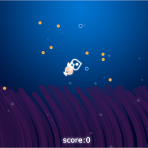

个人技能：
精通div+css网页布局与样式，对html语义化有深刻的理解。
精通HTML5+CSS3、HTML5新标签、canvas绘制。
熟悉网站从设计到切图编写及效果完成的一系列流程，能高度还原设计稿。
精通Javascript，熟悉各种前端调试工具，熟悉JS性能优化。
精通jQuery Moblie、Bootstrap、AngularJS框架，能快速高效实现各种交互效果，能与后台开发人员一起编写Ajax交互程序。
熟悉各浏览器间的差异，解决浏览器兼容性问题。
具备良好的编程风格，代码简洁整齐，能熟练编写符合W3C标准的高效率代码。
精通WebStorm、Dreamweaver 、Photoshop等软件。
拥有良好的沟通合作能力和团队协作能力，注重用户体验。
鱼妈妈与鱼宝宝的故事 HTML5
1.在页面定义两canvas元素，将小鱼，分数，UI，效果，背景，果实和海藻放置不同的canvas内进行绘制。
2.实现海藻产生果实，让果实向上浮动的动态效果。小鱼们跟随鼠标事件和rotate旋转画布旋转，使小鱼游动效果更生动
3.大鱼吃，大鱼喂小鱼产生触碰效果和得分。
4.通过计算2次贝塞尔曲线和正弦函数，使海藻有摆动效果。
京东首页：
点击查看
one more thing...
have you noticed it’s in 3D*?
* beat that, prezi ;)查看更多>请按右键